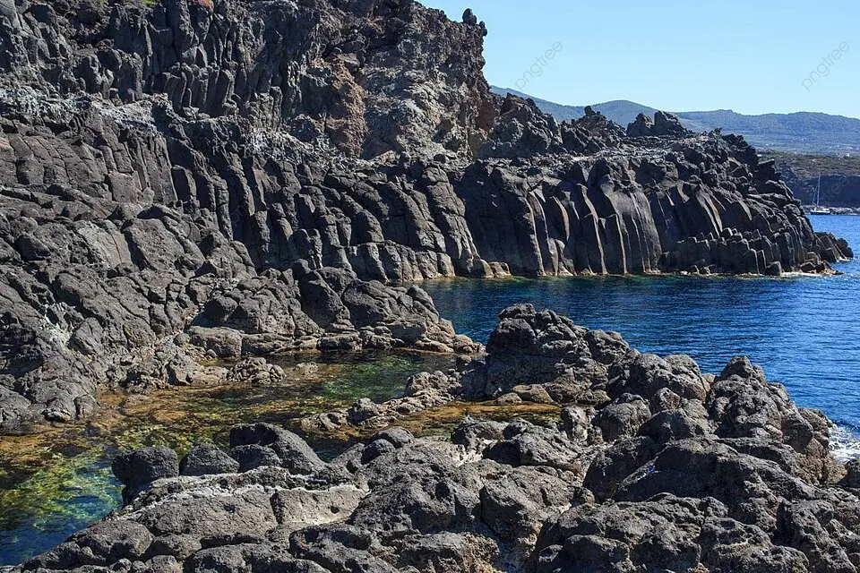
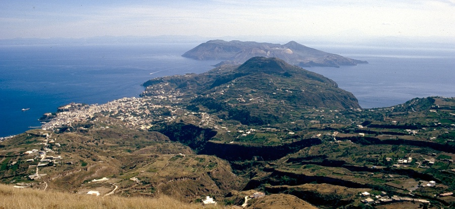
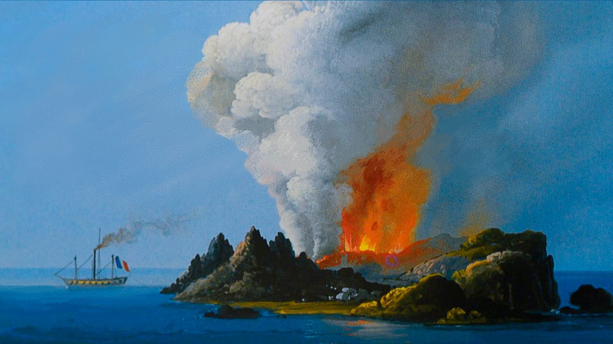
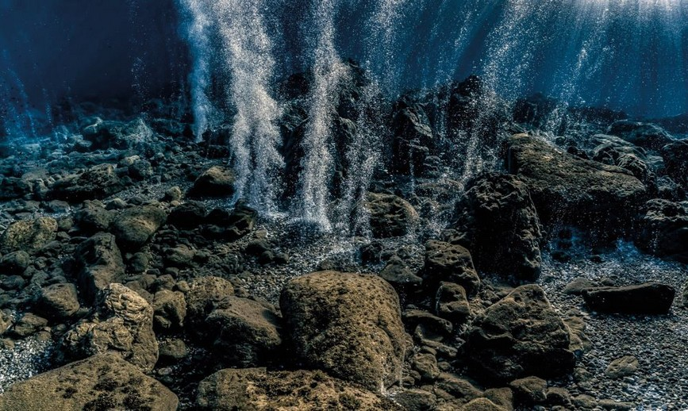

PANTELLERIA
Sicilia
Il vulcano attivo più alto d'Europa, è molto attivo con frequenti eruzioni.
ScopriAttività in Italia

Il vulcano attivo più alto d'Europa, è molto attivo con frequenti eruzioni.
Scopri
Nelle Isole Eolie, è noto per le sue esplosioni chiamate "esplosioni stromboliane".
Scopri

Antica caldera a 20 km da Roma. La sua conca ospita il Lago Albano e Castel Gandolfo.
Scopri

Il vulcano più grande d'Europa, sommerso nel Mar Tirreno. Nessuno lo ha mai visto.
Scopri